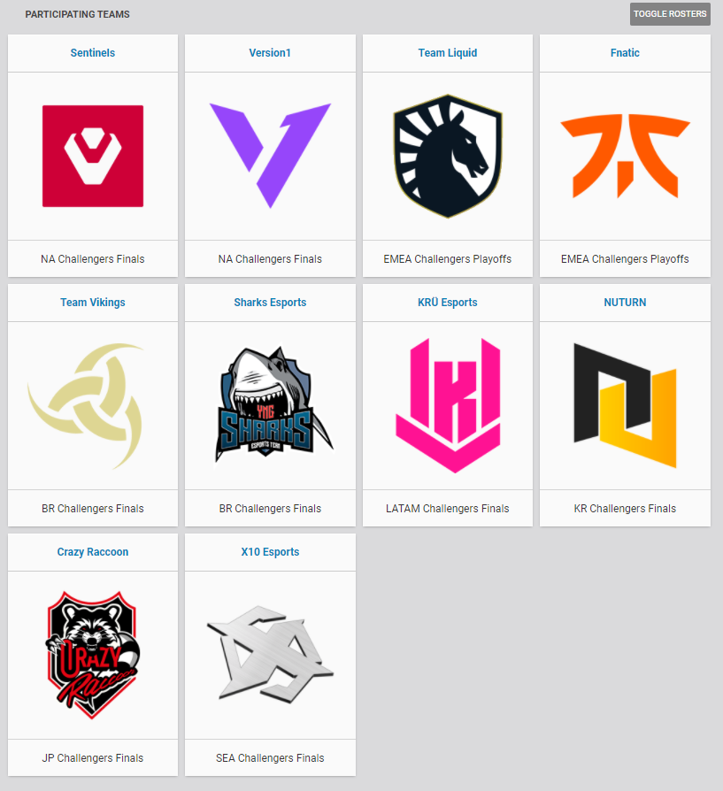

league of legends
csgo
valorant
news
league of legends
csgo
valorant
news
Se viene la VALORANT CHAMPIONS TOUR STAGE 2: MASTERS REYKJAVIK. el primer evento internacional y presencial del shooter de riot games, VALORANT. Los participantes seran: dos reprensentante de NA, dos de EMEA, dos de BR, uno de LATAM, uno de KR, uno de JP, uno de SEA.
Este primer torneo es muy importante a grandes rasgos. Vallamos a repasarlos, primeramente, este mismo cuenta para dar puntos para el ingreso AL PRIMER MUNDIAL DE VALORANT que se celebrara a fines de este año corriente, segundo, al ser la primera celebracion presencial de un torneo oficial es muy especial para los players que van a asistir ya que es el primero es como ser los primeros jugadores en jugar la primera LAN de VALORANT y tambien para los primeros cuatros puestos para cuando termine el torneo va a ser: 1st - 400 puntos, 2nd - 350 puntos, 3rd - 300 puntos, 4th - 250 puntos, esto cuenta para lo anteriormente mencionado sobre el ingreso para el mundial de VALORANT. bueno estaremos al tanto en los proximos dias sobre nueva informaciones. El torneo empieza el 24 de mayo hasta el 30 de mayo.